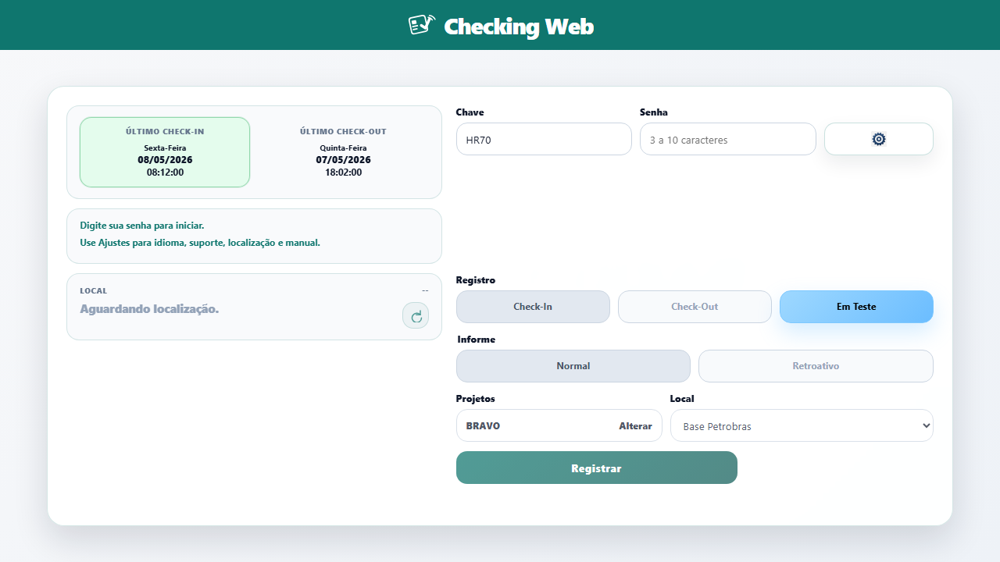
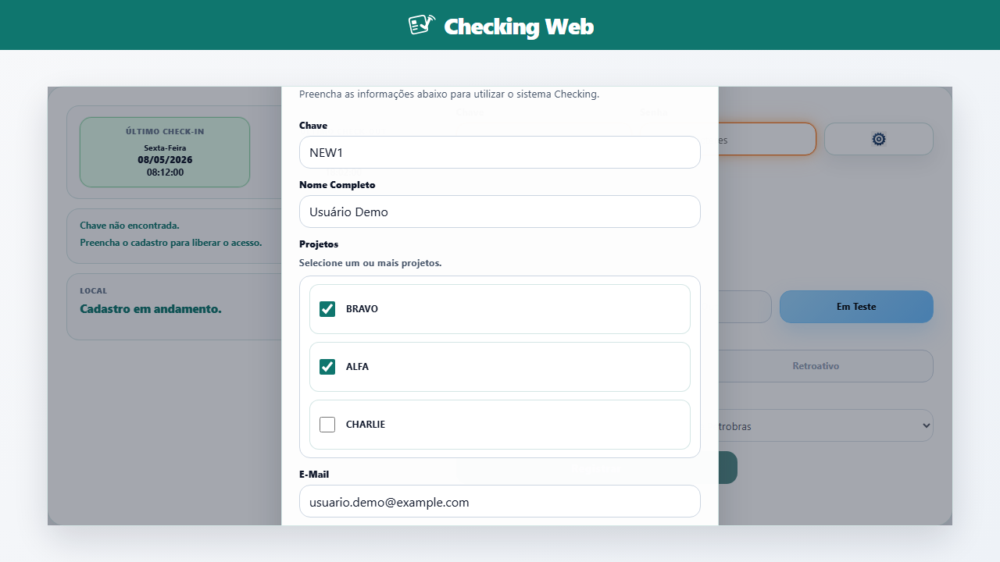
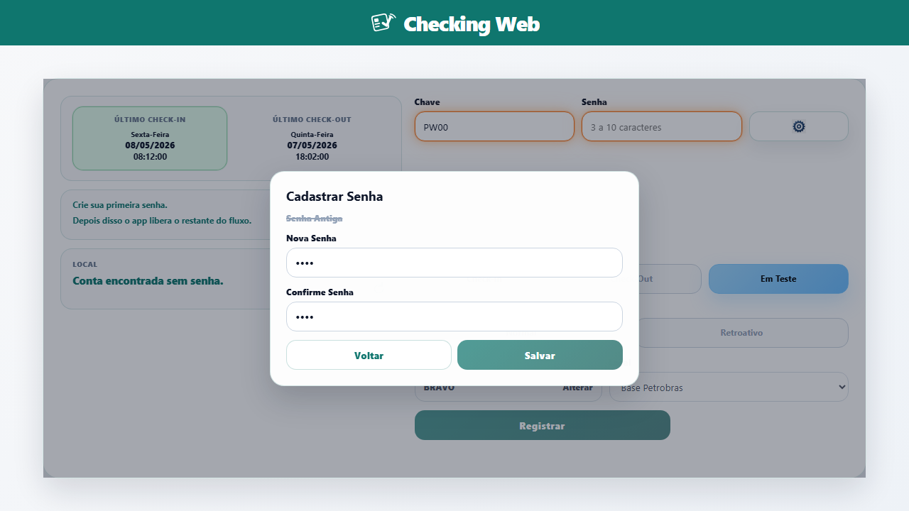
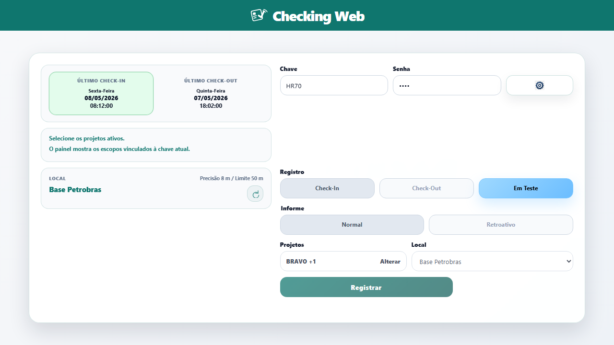
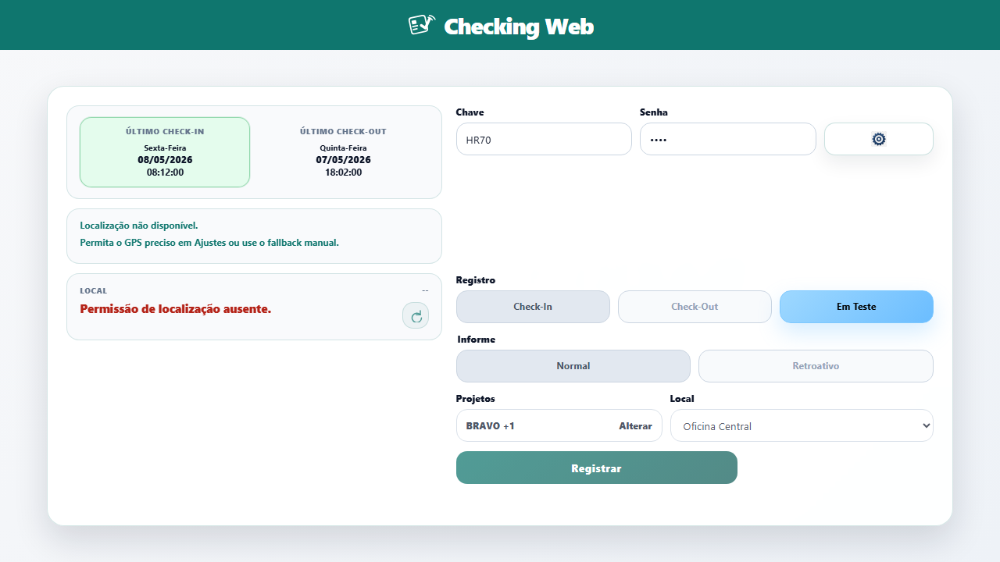
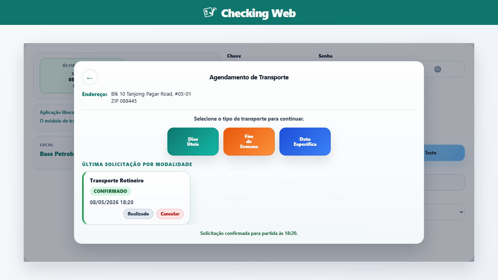
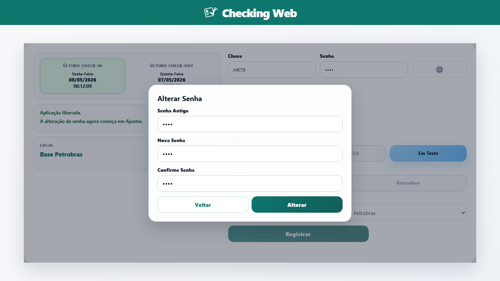
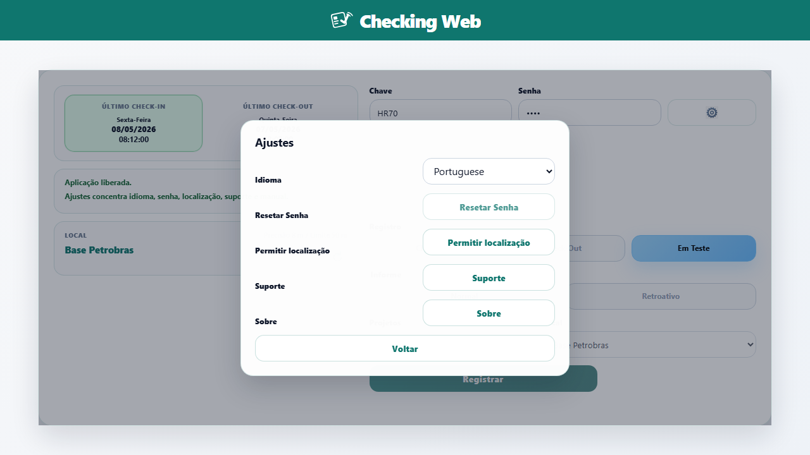

Acesso guiado
O app decide automaticamente quando pedir cadastro de usuário, criação de senha ou autenticação normal.
Checking Web • Guia de uso
Este manual resume os fluxos principais de autenticação, registro, localização, transporte e suporte do Checking Web.
Use esta página como referência rápida para entender o que o aplicativo faz automaticamente e quais ações continuam sob controle do usuário.
O app decide automaticamente quando pedir cadastro de usuário, criação de senha ou autenticação normal.
As permissões, a precisão do GPS e o fallback manual influenciam diretamente o registro de presença.
Ajustes centraliza idioma, senha, localização, suporte por WhatsApp e o acesso a esta documentação.
O Checking Web reúne autenticação, registro de presença, contexto de localização e acesso a transporte numa única superfície otimizada para celular.

A aplicação consulta o status da chave assim que ela atinge quatro caracteres válidos e decide qual assistência exibir.
Quando a chave não existe no banco, o app abre o formulário de autoatendimento para o novo usuário concluir o cadastro.

Se a chave já existir, mas não houver senha cadastrada, o Checking Web entra no modo de criação de senha.

Usuários já cadastrados digitam a chave, informam a senha e deixam o app validar a autenticação antes de registrar presença ou abrir Transporte.
Com a autenticação válida, o usuário escolhe o tipo de registro, revisa o contexto e envia a operação na própria tela principal.
O app usa projetos tanto no cadastro inicial quanto na rotina diária, para limitar o contexto do usuário e das localizações disponíveis.

A posição do aparelho é usada para determinar contexto operacional, acionar fluxos automáticos e orientar o usuário quando a precisão não é suficiente.

O app também consegue disparar check-in, check-out e atualizações relacionadas quando o contexto de localização muda da forma esperada.
Depois da autenticação, o usuário pode abrir o módulo de Transporte para solicitar viagens, consultar status e revisar detalhes da solicitação mais recente.

A alteração de senha saiu da linha principal de autenticação e agora fica concentrada em Ajustes.

O ícone de engrenagem abre um ponto central para preferências e ações secundárias, sem poluir a linha de autenticação.

Quando o usuário precisa de ajuda humana, Ajustes > Suporte monta uma conversa no WhatsApp com a chave já incluída na primeira mensagem.
Use estas respostas rápidas quando a interface parecer travada ou quando o fluxo não estiver avançando como esperado.
Isso acontece quando a chave não existe ou quando a conta ainda não possui senha. O novo fluxo evita cliques extras e leva o usuário direto para a ação correta.
Porque a aplicação já entende que a permissão precisa está ativa, ou porque uma atualização de localização já está em andamento.
Confirme primeiro se a chave e a senha foram autenticadas. Se o problema persistir, abra Suporte para enviar sua chave ao atendimento.